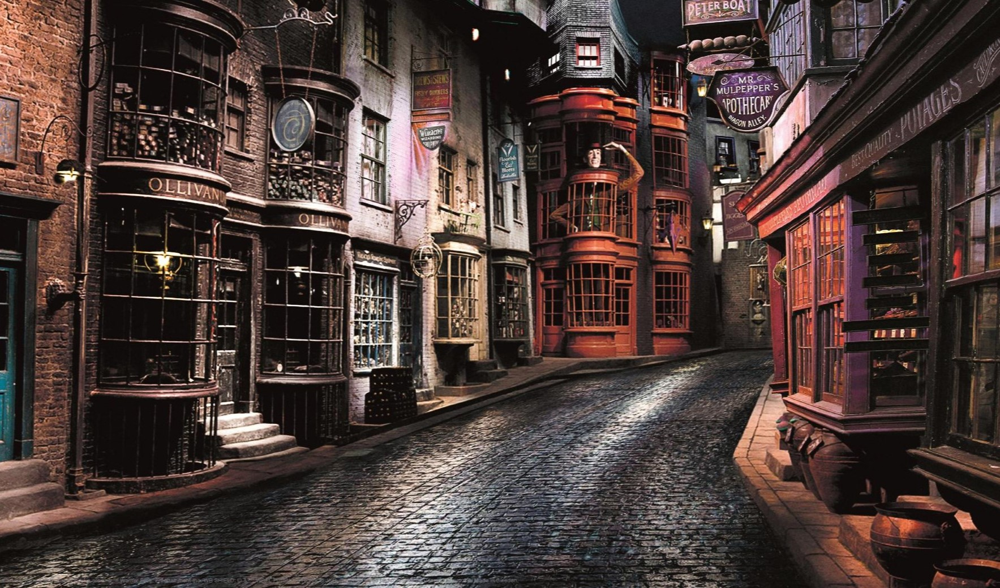

Familia muggle de cinco personas muere cerca del Callejón Diagon
Una familia muggle de cinco miembros fue encontrada asesinada en el Callejón Diagon. Nadie sabe cómo llegaron aquí ni cómo murieron, pero sí sabemos que llevaban la marca de Gryffindor en la frente.
Tom Mardie, el testigo ocular, dice: “Es un horror… Simplemente pasaba por allí cuando los vi a ambos muertos, la madre abrazando a los gemelos y el padre junto a la hija de 5 años”.
El Ministerio de Magia ha desplegado un equipo especial de Aurores para investigar el caso, y hasta el momento se barajan múltiples hipótesis. Algunos sugieren que podría tratarse de un grupo radical anti-muggle que busca sembrar el terror con símbolos de las casas de Hogwarts. Otros temen que sea la señal de un nuevo líder oscuro que intenta revivir las prácticas más oscuras de la historia mágica.
La Ministra de Magia declaró esta mañana que “no toleraremos actos de violencia contra muggles ni contra ningún miembro de nuestra comunidad. Tomaremos medidas drásticas para proteger tanto a magos como a no magos”. Sin embargo, la noticia ha desatado preocupación entre los estudiantes de Gryffindor, quienes temen ser injustamente señalados tras la aparición de la marca en las víctimas.
Por ahora, el Ministerio pide calma y advierte a la comunidad que evite transitar sola en áreas poco concurridas del Callejón, mientras las investigaciones continúan.